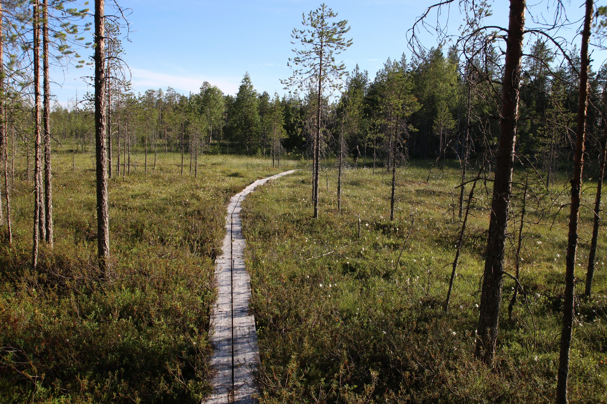

Suomen suosituin vaellusreitti
Karhunkierros on Suomen suosituin vaellusreitti. Se sijaitsee pääasiassa Oulangan kansallispuiston alueella.
Vaellusreitti ei ole ympyrän muotoinen nimestään huolimatta. Reitti on 82 kilometriä pitkä. Karhunkierros on jaettu yleisesti neljään reittiosuuteen. Jokaisen reittiosuuden vaeltamiseen menee n. 2 päivää.
Maasto on vaihtelevaa sisältäen helppoja ja vaativia osuuksia. Vesistöjen ylitykset tehdään joko pitkospuiden tai riippusiltojen avulla. Reitillä ei ole talvikunnossapitoa. Karhunkierroksen vaelluskausi on toukokuun lopusta lokakuuhun.
Oulangan kansallispuistossa on lisäksi Pieni Karhunkierros. Tämä vaellusreitti on huomattavasti pienempi, 12 km pituinen päiväreitti. Sen kulkuaika on 5-6 tuntia. Reitti sijaitsee Oulangan kansallispuiston eteläosassa. Vaeltaja tarvitsee hyvää peruskuntoa ja retkeilytaitoja reitillä. Reitillä näkee hienoja maisemia ja kaunista luontoa.
 Lue aiheesta lisää Metsähallituksen sivuilta